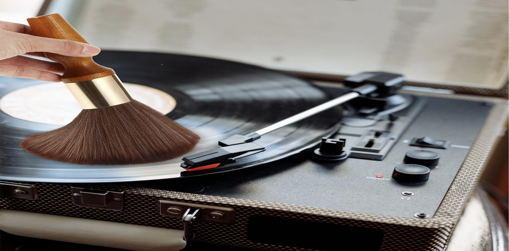
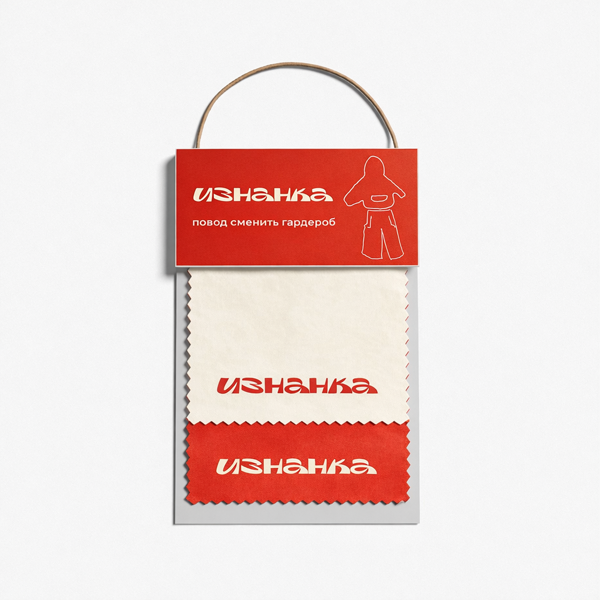
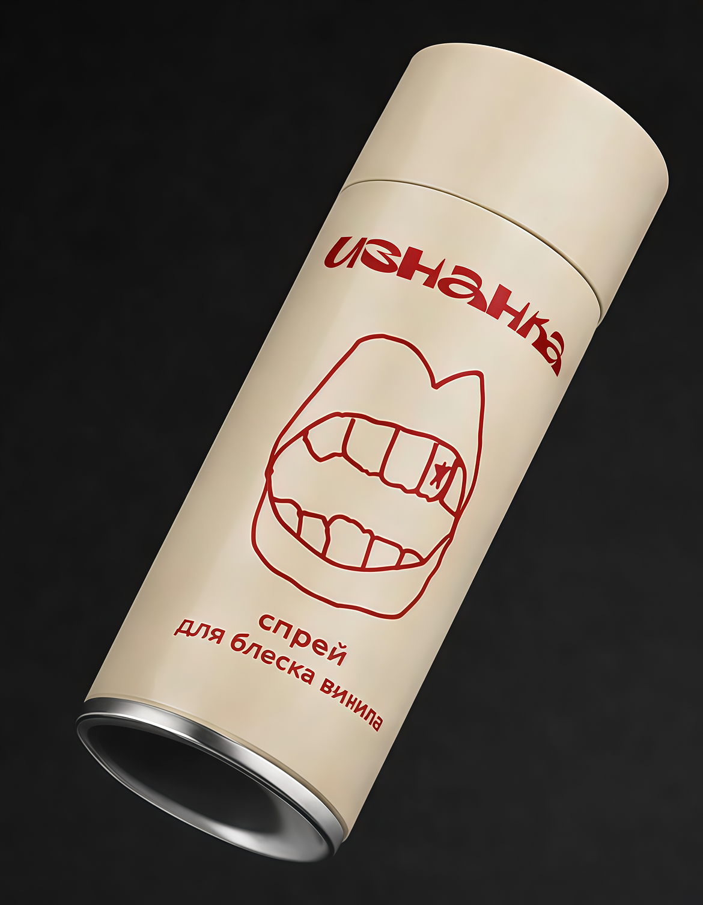

Купил фигурный проигрыватель с корпусом из нейлона, но боишься повредить необычную поверхность при уборке? Не знаешь, как правильно чистить пластинки во влажной квартире Петербурга или при сухом воздухе Сибири? Команда «ИЗНАНКИ» производит и тестирует проигрыватели такой сборки, поэтому точно знает, как продлить жизнь технике и винилу. В этой статье собрали 6 практических советов от чистки иглы до хранения устройства в условиях резких перепадов температур и влажности.
H1: 6 советов как ухаживать за виниловым проигрывателем и пластинками
Н2: Чем нейлоновый проигрыватель отличается от обычного?
Корпус из нейлона, напечатанный на 3D-принтере, лёгкий, прочный и может иметь любую фигурную форму. Но у этого материала есть особенности:
- нейлон боится спирта и ацетона, они делают поверхность мутной и хрупкой;
- углубления фигурного проигрывателя собирают пыль быстрее гладких корпусов;
- при резких перепадах температур нейлон может давать микротрещины (особенно при перевозке зимой).
Именно поэтому обычные советы по уходу за классическими проигрывателями из дерева или металла здесь не подходят.
Н2: 6 советов по уходу за виниловым проигрывателем и пластинками

Н3: Совет 1: Очищай корпус без спирта и жёстких щеток
Для ухода за виниловым проигрывателем из нейлона используй только мягкую микрофибру и слабый
мыльный раствор,
например, капля жидкого мыла на стакан воды. Если на фигурных элементах скопилась пыль, возьми мягкую кисточку и
аккуратно пройдись по всем выступам и впадинам.
Что нельзя делать:
Что нельзя делать:
- протирать спиртовыми салфетками (при его использовании корпус потускнеет);
- использовать жёсткие щётки (они повредят поверхность и появятся царапины);
- применять ацетон или растворители (при контакте с чистым ацетоном нейлон мгновенно набухает, теряет форму и превращается в гель).
Н3: Совет 2: Ухаживай за иглой после 200 прослушанных песен (это около 10 часов)
Игла звукоснимателя - самая чувствительная часть винилового проигрывателя. Даже микроскопическая пылинка искажает
звук и царапает пластинку.
Н4: Следуй правилам чистки иглы:
Для сухих регионов (Поволжье, Сибирь) советуем чистить иглу проигрывателя перед каждым сеансом прослушивания. В данных регионах пыль на поверхностях может скапливаться быстрее, чем в регионах с более высокой влажностью.
Н4: Следуй правилам чистки иглы:
- используй специальный гель, который не повреждает кончик иглы звукоснимателя;
- применяй щётки из углеродного волокна или вельвета. Они эффективно удаляют пыль и загрязнения, не повреждая иглу и пластинки;
- движения чистки строго от основания иглы к острию;
- не дуй на иглу - слюна и влага вызовут коррозию.
Для сухих регионов (Поволжье, Сибирь) советуем чистить иглу проигрывателя перед каждым сеансом прослушивания. В данных регионах пыль на поверхностях может скапливаться быстрее, чем в регионах с более высокой влажностью.
Н3: Совет 3: Содержи диск и привод в чистоте
Диск проигрывателя вращает пластинку и на нём оседает пыль.
Н4: Как чистить поверхность диска:
Если у тебя нейлоновый проигрыватель, то проверяй винты крепления диска раз в полгода. Этот материал даёт микроусадку, и со временем винты могут ослабевать.
Н4: Как чистить поверхность диска:
- после каждого снятия пластинки протирай диск сухой микрофиброй;
- раз в месяц делай влажную чистку антистатическим спреем или мыльным раствором (только не попадайте на нейлоновый корпус);
- для поддержания привода осматривай ремень, пыль и растяжение ухудшают скорость вращения.
Если у тебя нейлоновый проигрыватель, то проверяй винты крепления диска раз в полгода. Этот материал даёт микроусадку, и со временем винты могут ослабевать.
Н3: Совет 4: Осматривай и очищай виниловые пластинки перед каждым проигрыванием
Важен уход как за виниловым проигрывателем, так и за пластинками. Грязный винил
трещит, шипит и быстрее изнашивает иглу.
Следуй минимальной процедуре ухода, чтоб избежать проблем:
Н4: Чего нельзя делать при очистке виниловых пластинок:
Следуй минимальной процедуре ухода, чтоб избежать проблем:
- перед каждым проигрыванием проходись антистатической щеткой с карбоновым ворсом;
- держи щётку под углом, чтобы пыль выметалась наружу;
- для глубокой чистки раз в 2-3 месяца используй специальную ванночку с валиком или спрей для винила с антистатическим эффектом + замша.
Н4: Чего нельзя делать при очистке виниловых пластинок:
- использовать бытовую химию, спирт, ацетон(они стирают дорожки);
- мыть виниловые пластинки под краном (вода оставляет жёсткие соли в дорожках).
Н3: Совет 5: Какие средства и принадлежности пригодятся для ухода за виниловым проигрывателем и пластинками
Для полноценного ухода за проигрывателем и пластинками тебе понадобится минимальный набор.
Заметь: не приобретай универсальные чистящие салфетки для техники - в них часто есть спирт. Используй только специальные средства для винила и нейлона.
- Антистатическая щётка карбоновый ворс: поможет снять пыль с виниловой пластинки перед игрой. Разработана с учётом бережного очищения, у неё мягкий ворс, который не оставляет царапин.
- Гель или щётка для иглы: очистит иглу от грязи. Важно при использовании не касаться нейлонового корпуса.
- Микрофибра (2–3 штуки): для ухода за диском и корпусом (должна быть мягкая, без ворса).
- Антистатический спрей - влажная чистка диска и пластинок. Нельзя распылять на нейлон.
- Масло для подшипников без кислот - пригодится для смазки тонарма и подшипника диска.
- Мягкая кисть - способствует удалению пыли из углублений фигурного корпуса (идеально для 3D-печатных моделей проигрывателя).


Заметь: не приобретай универсальные чистящие салфетки для техники - в них часто есть спирт. Используй только специальные средства для винила и нейлона.
НЗ: Совет 6: Учитывай климат вашего региона
Россия охватывает все климатические условия, и уход за виниловым проигрывателем и пластинками в Сочи и в Новосибирске отличается.
Вот основные правила для разных климатических зон:
Влажный климат (Санкт-Петербург, Сочи, Калининград):
Сухой климат (Поволжье, Сибирь, Якутия):
Резкие перепады температур (Урал, Средняя полоса):
Влажный климат (Санкт-Петербург, Сочи, Калининград):
- используй осушитель воздуха или силикагель в шкафу с пластинками, так ты предотвратишь появление плесени;
- раз в месяц проверяй нейлоновый корпус на конденсат и протирай сухой тканью;
- даже на нейлоне и пластике может завестись плесень, поэтому проветривай комнату.
Сухой климат (Поволжье, Сибирь, Якутия):
- статическое электричество главный враг этих регионов.
Приобрети увлажнитель воздуха; - прочищай иглу и пластинки перед каждым прослушиванием — при сухом воздухе пыль притягивается моментально;
- будет полезен антистатический коврик под проигрыватель.
Резкие перепады температур (Урал, Средняя полоса):
- старайся не вносить виниловый проигрыватель с мороза в тепло и тем более не включай сразу;
- дай устройству нагреться до комнатной температуры 2-3 часа, чтобы избежать конденсата внутри корпуса;
- нейлон может дать микротрещины при резком нагреве.
Н2: Календарь регулярного обслуживания винилового проигрывателя и пластинок
Чтобы ничего не забыть, используй график с контролем выполнения простых действий:
Этот график подходит для большинства регионов. Во влажном климате добавь ежемесячную проверку корпуса на плесень, в сухом — более частую чистку иглы.
- перед каждым проигрыванием почистить пластинку антистатической щёткой;
- после каждых 10-15 часов прослушивания почистить иглу гелем или щёткой;
- раз в неделю протереть диск микрофиброй;
- раз в месяц влажная чистка диска (спрей), осмотр ремня;
- раз в полгода смазка подшипника тонарма, проверка винтов корпуса;
- раз в год глубокая мойка всех пластинок (ванночкой).
Этот график подходит для большинства регионов. Во влажном климате добавь ежемесячную проверку корпуса на плесень, в сухом — более частую чистку иглы.